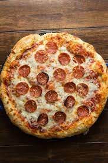

Pizza

Description
Making homemade pizza dough can sound like a lot of work, but it’s so worth the bragging rights. The dough itself requires few ingredients and just a little bit of rising and rest time
Ingredients
- 2 teaspoons active dry yeast
- 7 cups all-purpose flour
- 6 tablespoons extra virgin olive oil
- 28 oz canned whole tomatoes
Steps
- “Bloom” the yeast by sprinkling the sugar and yeast in the warm water.
- Once the flour is mostly hydrated, turn the dough out
- Preheat the oven as high as your oven will allow, between 450-500˚F
- Add the salt to the can of tomatoes and puree with an immersion blender,
return to home